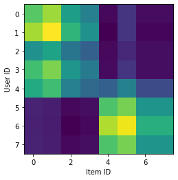

推荐系统如何让我们变得极端
前言
这个题目我想写很久了，之前我写过一篇互联网政治圈观察日志，算是描述了一下现象，我今天想猜测一下起因——以一个推荐系统工程师的身份，猜测和讨论一下推荐系统引起的那些问题。
虽然讨论推荐系统，但是我保证，这是一篇技术无关的文章，不需要任何数学的基础也可以轻松阅读，如果能对你有用，那我就再高兴不过了。文中可能会出现一些政治观点，由于本文不讨论任何政治和立场相关的内容，所有的观点都是为了举例，请务必注意。
文章自认为写的不太好，有些观点可能没有表达清楚，其中一个原因是没找到合适的作图工具，一些图形化表达很简单的观点可能表达的不是那么清晰。
我们为什么要有推荐系统
推荐系统的诞生，是为了解决信息过载的问题，今天人类出版书报的速度已经远远超过了单人阅读的极限，更不要说互联网，一个稍微有点人气的论坛，要读完每天的所有新帖子也是一件非常费劲的事情，以至于大一些的论坛需要许多的版主来维护。再比如知乎，每天的新问题，新回答都不是我等能阅读过来的速度，知乎需要雇佣很多人来做内容检查，删掉冲塔的，发广告的，搞黄色的……当然机器学习的NLP技术大大减少了所需要投入的岗位数量，不过这是另一个话题了。
我们从信息匮乏的过载，只用了区区几十年，面对这样过载的信息，必须要有新的技术解决。
首先是分类，比如针对书籍，我们有中国图书馆分类法。雅虎早期的内容分类目录也是这一思想的体现。事实上，这一分类法并不少见，很早我们在分类书籍的时候，就分为四大类：经史子集。以及分类生物的时候提出了7个层级：界、门、纲、目、科、属、种。今天打开腾讯的首页，仍然可以看到这些类别：新闻，视频，图片，军事，体育，NBA，娱乐，财经，科技，时尚，汽车，房产，教育，文化，星座，游戏等等。还有一些网站分为了亚洲图片，欧美图片，……咳咳
但是信息仍然在过载，过载到了给每一个物品赋予对应的类别都很麻烦，甚至单单展示分类用的索引或者目录都很困难，要知道，互联网时代不少人的阅读能力是不高于140个字的。这个时候就有搜索引擎了，百度，谷歌，淘宝理论上都是搜索引擎（淘宝早期也是目录式的，现在以推荐+搜索为主了）。但是搜索引擎的基础是，你知道有这个东西，但是不知道在哪里。而我们往往是不知道有这个东西，大家有的时候会发出感叹：淘宝还有这个东西卖啊！就是这样的情况。
所谓的未知有两种：已知的未知，和未知的未知。前者你只是不知道答案，后者，你甚至不知道问题的存在。
这个时候，参考社会化推荐，人类开始准备做推荐系统。推荐系统的一个基础原理是，物以类聚，人以群分，并且将这个原理用数学公式体现出来。 举个例子，我爱读《三体》，但是不知道《流浪地球》，《球形闪电》，这个时候，有一个饱读大刘的朋友给我推荐这些书，那我应该是会欣然接受的。再比如，推荐系统认定我是个科幻迷，于是给我推荐科幻类的书籍，肯定比给我推荐《羊皮卷》这种洗脑书要靠谱的多。
如果我们给M个用户和N个物品都从0开始编号，并且将用户和物品的正面的交互信息（如阅读/点赞/购买）放入矩阵的小格子里，我们可以得到这样一张交互图：
经过推荐算法处理以后（我这里简单的用了一个SVD代替），大致是这样：

我们可以看到人群分为两派，一派喜欢前4种物品，另一派比较喜欢后4种物品，我们就这样把缺失值填上了，看上去问题解决了。 但是新的问题，也就从这里开始。
推荐系统为何让我们偏激
相信大家都不是粪车从门口过也要尝尝咸淡的人，所以我们大概率会集中在自己喜欢和支持的东西上——这个看上去也没什么大问题。比如饭圈之前就喜欢搞“封地自萌”，我们小圈子觉得哥哥最帅那就是最帅其实没有任何问题，哪怕出了圈子也没人认识你那哥哥姓甚名谁，你哥哥也可以天下第一。
但是这一切的前提是“人贵自知之明”，你需要知道你看到的结果是由你的历史行为形成的向量召回并且经过精排算法排序形成的，是你自己决定了自己看什么，你所在的就是一个小圈子，万万不要把它当成整个世界。
还是以饭圈为例，你的微博满屏都是你的好哥哥，但并不代表所有的人都在看你的哥哥，对你来说你的好哥哥是97%甚至100%，但是对于整个微博的流量可能只有10%，影射到生活可能之战1%都不到，毕竟大家还要回家做饭收衣服，很忙的！
不幸的是，人类就不是有自知之明的生物，之前的饭圈“破圈”，以及2.27事件就是相当的典型——一个我不认识的私域流量明星的粉丝通过举报等手段，让另一个我不熟悉的圈子（同人圈）的交流和发表作品用的网站消失。 从资本的角度看，所谓破圈是资本是不满足于收割私域流量，准备扩大收割面积，2.27事件是破圈的阵痛，是韭菜对资本无力的抵抗。 但是从普通用户的角度看，是一群异常极端的人在四处攻击他们所有看不顺眼的行为。在我看来，这些异常激动的行为的罪恶根源在于两方：推荐系统及其它原因产生的信息偏置，以及容易被偏置过的信息洗脑的人类。
支持观点A的人看到自己的首页上95%的观点都支持观点A，很高兴，支持观点B的人看到页面上99.85%都支持观点B，更加高兴。在他们看来，只不过还有5%或者0.15%的人似乎反对自己的观点。
天呐，大家都一边倒的支持自己的观点，怎么还有这么几个人冥顽不灵？
这个时候人类的另一个缺点——或者从生存的角度说是优点——就起作用了：仗势欺人，大家都觉得自己人多，自己的观点逻辑上也说得通——虽然他们的逻辑可能是基于错误事实推导出来的，但是没关系，我们现在人多，我们一人一口唾沫都能骂到你销号。
所以除了在自己的小圈子里互相转发以外，就是试图去“感化”支持自己能看到的、为数不多的、持对立观点的人。
我认为这种现象可以称作观测偏差，让人产生观测偏差，这也是洗脑的基本原理。一些政府也好、组织也罢，有目的，有组织的对互联网的内容进行注入或者删除，来达到让民众产生观测偏差，进而借此洗脑的目的。 比如我在前一篇文章里提到日本的“蓝莓星冰乐”推特，就是通过注入数据的方式，让大家觉得新冠并不是一个很严重问题，结果被日本网友掀了个底儿掉。 还有一些奇妙的机构，不仅通过注入，还通过删除的方式，让大家产生“岁月静好”，“万众一心”的错觉，就这样还经常翻车，真是“有心栽花花不开”。 这么来看，推荐系统造成的偏置只能算是“无心插柳柳成荫”。
稍微聪明一点的人会用小号或者匿名的模式去单纯的观测，可能可以得到类似：“AB两派势均力敌，但是从数据看，A暂时略胜一筹”这样较为中立的结论。
但是如果真正的从后台数据看，有可能支持观点A和观点B的人加起来不超过30%，大多数人其实支持的是更加温和的观点C，只不过他们甚至都不关心这个问题本身，所以被系统忽略了。 于是我们看到，AB两派吵得天翻地图，互相骂对方臭不可闻，是狗屎，是蛆，C则在风花雪月，聊天打牌，时不时莫名其妙被卷入AB之争当成对立面里面溅一身口水。
推特上的键政圈里这个问题尤其明显，有些观测偏差甚至不是推特在搞鬼，而是用户自己制造的：
比如上面这个小工具的主要作用就是：拉黑给某一条推特点赞的用户。 一般来说，有人发现了一条自己极其厌恶的推特，这个时候就可以拉黑所有给这个推特点赞的人。 本身推荐系统就有“协同过滤”之称的算法帮你过滤你不喜欢看的东西了，这个小工具可以说加剧了对立。
对立的产生本身就在于人类不愿意动脑子，不去思索为什么这些人会发让你厌恶的内容，而是单纯的觉得对方恶臭，讨厌，自己不愿意再见到。 我看到一条新闻，不需要确认其真伪，细节，只需要用我脑袋里的政治观点就可以作出评论，参见这个推特下面的评论：貴州女子高空玩兒秋千。
廖雪峰老师也曾经吐槽过：
__国交警控制绿灯为过马路老人多亮了97秒，你怎么看？
- A：美国：体现了人类灯塔的光辉；
- B：日本：体现了社会尊老爱幼；
- C：中国：交警滥用职权，行人不守规则，且缺乏天桥等基础设施。
我可以偏激的说一句，使用这个屏蔽点赞用户小工具的人，相当偏激，且相当容易被洗脑。因为他的脑袋里只允许装下一个观点，他的世界只能有一个声音，所有的反对意见都是这个世界的渣滓和污垢，他会认为这样的屏蔽行为只是一种“清洁”，就好像装纱窗防蚊虫一样自然。
如何对抗推荐系统
首先，你只要记住：“我看到的信息，大部分都是有偏向性的，不可轻信”，就足以对抗世界上大部分的洗脑，传销，带节奏。你甚至不用去特地对抗，因为你知道信息是有偏的，你就不会偏激。
当然，单单记住这一句话是有点问题的，毕竟我们还要靠互联网收集资料，如果不相信自己看到的信息，意味着无法获取任何有用的信息。这个时候我继续给出一个不是特别完美的解决方案：“孤证不立”。
当我们看到一个观点或者一个信息的时候，在接受它之前，首先最好能找到完整的证据链去证明它。比如你对我推荐系统“物以类聚，人以群分”的观点有疑惑，可以自己造一点数据去跑一跑诸如SVD++这样的算法，就知道我最后两张图表所言不虚。
对于一些证据不好找的内容，可以这样判断：如果你看到一些评论一边倒的内容，只有支持，没有任何反对，那这个内容肯定有问题。
要让一个内容成立，至少找到两个不同的支撑这个内容的证据，如果可以的话，最好找到反对的观点。如果实在无法确认，可以试试自己制造一些反对的观点，看看这些观点会引起怎样的讨论，或者怎样的消失，你对这个内容的可靠性心里就有数了。这样你才可以在相信与不相信之间慢慢抉择，有叫大概率作出正确判断。
所以，你最好关注一些你不喜欢的人，听一听你不喜欢的声音。尽管这么做可能对你造成不适，但是适度的不适可以让你成为一个更加开阔、理性、客观的人。成为所谓客观人不会带给你任何直接收益，但是减少偏激至少有助于防止形成极端主义，例如法西斯那样的独裁和专制。
看到喜欢的或者不喜欢的内容，切勿被一时的情绪所裹挟而冲昏了头脑，仔细想想，这个内容的作者本身可能抱有什么样的目的，作者隐藏了什么没有告诉你的内容。
以本文为例，我前面没有告诉你的是，新颖性也是推荐系统的指标之一，虽然难以评估，但是很重要。 推特并没有太多的过滤你的内容，最多是根据你的关注点赞信息给你推对应的广告，推特也有Trend这样的模块让你发现更大世界。 基于以上观点，将错误全部推给推荐系统并不对，如果你抱着前文的观点跑到互联网公司去要求他们撤掉推荐系统那就不对了，这篇文章也不是为了引起你对推荐系统的仇恨，我还是肯定推荐系统在解决信息爆炸上的价值的。
事实上，推荐系统会造成上述的问题，但是往往小于一些别有用心的人和组织进行的信息注入和删除——这是非常常见引导舆论的手段，这些特性的删除和注入的破坏力也远大于推荐系统造成的因为用户自我选择而带来的倾向性。
希望大家都能有更开阔的视野。
As the plugin is integrated with a code management system like GitLab or GitHub, you may have to auth with your account before leaving comments around this article.
Notice: This plugin has used Cookie to store your token with an expiration.